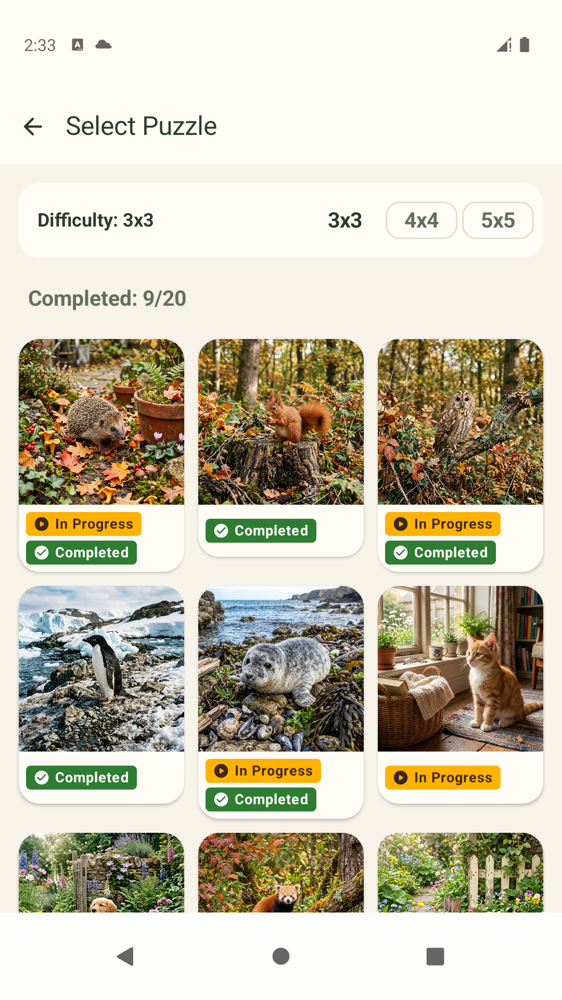
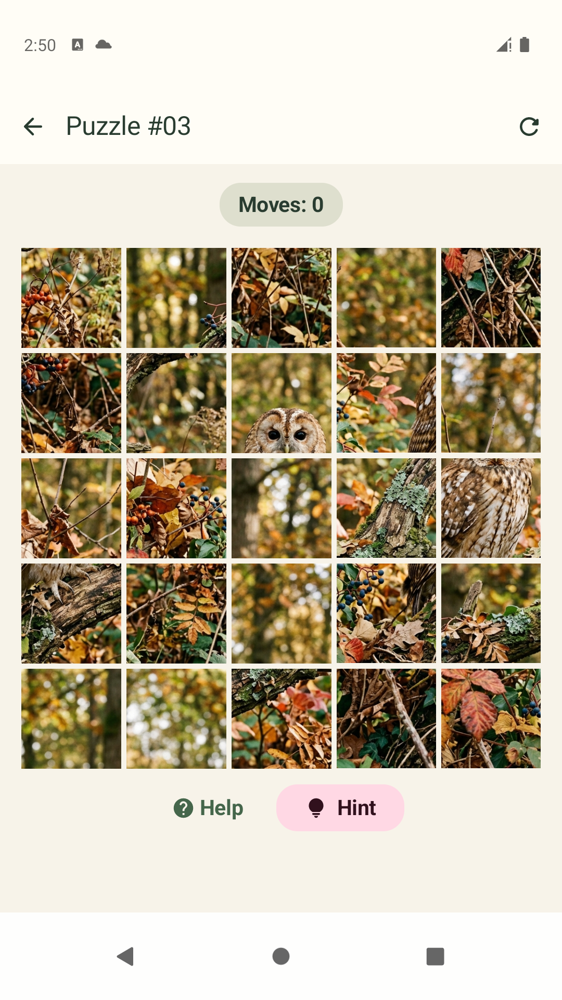
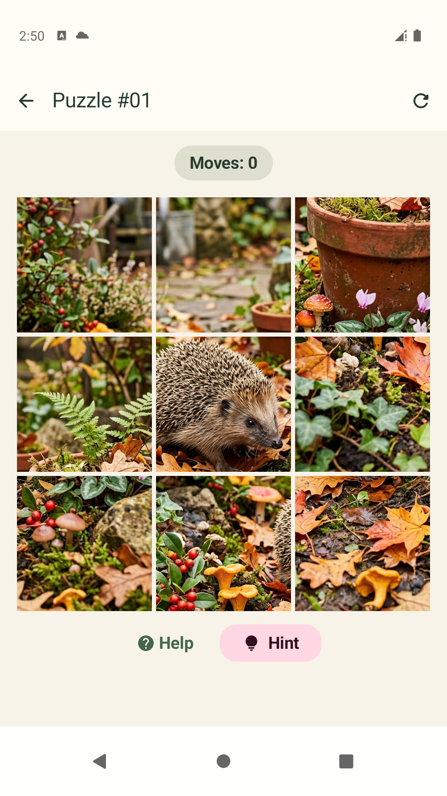
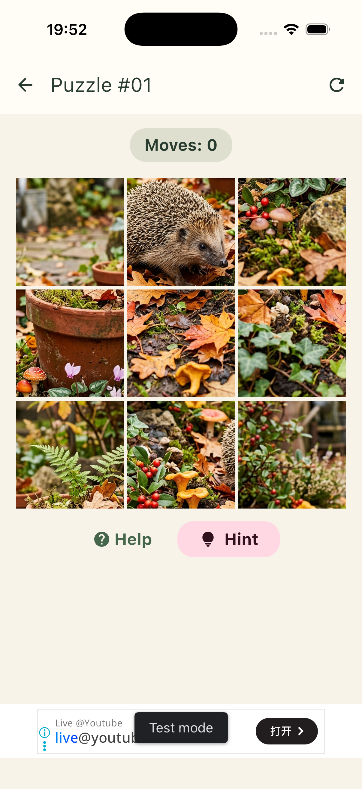

Nadya Bryzgalova
Nadya BryzgalovaI've never quite understood judging developers by their tech stack. I really haven't. If someone can pick up a new language in a reasonable amount of time and understands algorithms, data structures, system design, application architecture, databases, networking, concurrency, and memory management, why box them into a particular stack?
I started out building desktop CAD systems, then worked on backends, then moved into mobile development and stayed with Android for a long time. A single stack has always felt a little too confining. Luckily, mobile development gives you plenty of opportunities to work closely with backend engineers. And then there are the regular requests to “make it work like the iOS version.” Before you know it, you're reading someone else's project, figuring out its architecture, and trying to understand why things work that way on the other platform.
I think many engineers will recognize the feeling: you start reading code, work out what it does, and only a few seconds later notice that it's actually written in another language. You're already following the logic and how things fit together, while the syntax fades into the background. That's why it feels strange to define an engineer primarily by the language they happen to be using today.
I do understand that knowing a platform saves time. iOS was a good example of that gap in practice: I'd read plenty of Swift and understood it fine, I just hadn't had a reason to ship an app of my own yet. There is a difference between "I can read this code" and "I can ship and maintain this app," and I wanted to close that gap myself.
So I decided to build a simple game for Android and iOS and see which parts came easily and which made me stop and figure things out. Besides, it sounded fun. Giving ourselves a challenge is how we get better, isn't it?
I chose Kotlin Multiplatform for this experiment. I believe in KMP's future. It seems like one of the most promising approaches to cross-platform development, and I wanted to try it myself. From my side, getting started looked comfortable enough: write an Android app, then hook up a few things so it builds for iOS too. Spoiler: that's pretty much how it went. The important part was choosing something small enough to try without burning out.
I'll walk through how I organized the shared code, added the platform implementations, and got the game running on iOS. Then I'll cover how it all became two separate builds. This is the route I took from familiar Android development to my first iOS app of my own.
First, Just Build a Game
For the experiment, I chose a tile puzzle with cute animals. A picture is split into tiles, and you swap them around until you've restored the original image. A few difficulty levels, saved progress, hints, and some satisfying effects when you win. It turned out to be surprisingly hard to put down.
I created the project in Android Studio and initially worked much as I normally would: writing Kotlin, building the UI in Compose, and running the Android version.
I structured the project for both platforms from the start, following the Kotlin Multiplatform documentation: shared code lives in a separate module, and each app has its own entry point. The project has three main parts:
appis the Android application. It containsMainActivity, AndroidManifest, Android resources, and the app's build configuration.composeAppis the shared module. It contains the game's UI and logic, along with platform implementations written in Kotlin.iosAppis the iOS application. This is where I later added the Xcode project, Swift code, and iOS build configuration.
Inside composeApp, the code is divided into source sets. These are groups of source files with their own dependencies that Gradle includes in the relevant compilations. In my case, some sources are shared by both platforms, while others are specific to Android or iOS:
composeApp/
└── src/
├── commonMain/ ← shared Kotlin code and Compose UI
├── androidMain/ ← Android implementations
├── iosMain/ ← iOS implementations in Kotlin
└── commonTest/ ← shared tests
Almost the entire game gradually ended up in commonMain: the puzzle engine, models, screens, navigation, victory effects, and save logic. The images and privacy policy HTML also live in the shared module, under commonMain/composeResources.
For example, PuzzleEngine handles tile swaps and checks the result, GameScreen displays the board, and SettingsManager saves progress. All of this is written once and used by both platforms. Saves are serialized to JSON, while Multiplatform Settings handles the underlying platform storage.
androidMain and iosMain come into play when the code needs a platform API. For me, that meant getting the current time, displaying a WebView, and later integrating ads. The code in iosMain is still Kotlin: it can call APIs such as NSDate or WKWebView. Swift code lives separately in the iOS app.
There was an important distinction here between “starting with Android” and “starting with Android-specific code.” I was only running and testing the game on Android at this point, but I was writing the game itself in the shared module from the beginning so I could use it on iOS later.
The nicest thing about KMP turned out to be fairly ordinary: most of the time, I wasn't thinking about writing a cross-platform app at all. As long as the code lived in commonMain, it felt much like a regular Compose project. The difference only became noticeable when I needed to call a platform API.
So my first takeaway was simple: for this game, KMP didn't make me think about two platforms all the time. It made me decide up front where the platforms actually differed.


Where Separate Implementations Come In
As I mentioned, I only needed to write separate platform implementations in three places: time, WebView, and ads. Let's look at each one.
1. Time
The shared code needs to save the time of the player's last action. On Android, I can call System.currentTimeMillis(). On iOS, I can get the time through NSDate.
In KMP, this is handled with expect and actual: declare the contract in shared code and provide its implementations in the platform source sets.
The shared code declares the function:
// commonMain
expect fun currentTimeMillis(): Long
Android provides its implementation:
// androidMain
actual fun currentTimeMillis(): Long =
System.currentTimeMillis()
And iOS provides its own:
// iosMain
actual fun currentTimeMillis(): Long =
(NSDate().timeIntervalSince1970 * 1000).toLong()
The function has the same package and a matching signature across the source sets. The shared code simply calls currentTimeMillis(). The compiler connects it to the appropriate implementation when building for each platform. In this case, I didn't even need to write Swift to call NSDate: Kotlin/Native can access Apple's platform APIs directly from Kotlin.
2. WebView
I wanted to display the privacy policy inside the app using a local static HTML file. I kept the screen and HTML shared, with a platform implementation for the component that displays the HTML.
In the shared code, I declared a composable function:
// commonMain
@Composable
expect fun LocalWebView(
htmlContent: String,
modifier: Modifier = Modifier
)
On Android, this contract is backed by a WebView embedded in Compose through AndroidView. On iOS, it's a WKWebView inside UIKitView. The shared screen passes the HTML and a Modifier; creating the native component and loading the HTML are handled by each platform implementation. I didn't have to duplicate the screen layout or the document itself.
3. Ads
I'm jumping ahead a little here: I integrated ads after the game was already running on iOS. But I'll cover them here to keep all three examples of platform implementations together.
Ads made things more interesting. I needed to work out both how to call the SDK and when to show ads: skip the first win, leave enough time between ads, and avoid showing one when the player returns to an unfinished game. A single showAd() function wouldn't describe the whole problem.
I split the responsibilities: the shared code knows when to show an ad, and the platform knows how to show it. The rules stayed in the shared AdCoordinator, while loading, readiness checks, and presentation sit behind the AdService interface. Here's a short extract from the coordinator:
// commonMain: extract from AdCoordinator
fun showInterstitial(onDismissed: () -> Unit) {
if (!canShowInterstitial()) {
onDismissed()
return
}
adService.showInterstitial {
updateLastShowTime()
onDismissed()
}
}
canShowInterstitial() checks the shared conditions and whether an ad is ready. If those conditions are met, the coordinator calls the platform service. Otherwise, the player continues without an ad.
On Android, AdService is implemented by a Kotlin class that uses the Android ads SDK. On iOS, a Swift class implements IosAdService, which extends the shared contract. Each platform creates the appropriate object and passes it to the shared App(adService). This is ordinary dependency injection: the shared code uses an interface without knowing the SDK details.
The banner is embedded in the shared screen in the same way as the WebView: through AndroidView on Android and UIKitView on iOS. In the iOS version, the Swift service creates the banner's native View.
The result was a separate SDK integration for each platform, with the rules for showing ads kept in one place. I can change those rules for both platforms without touching the code that loads and displays the ads.
Where the Shared Code Ends
After this experiment, here's how I'd describe KMP: we choose the boundary between shared and platform code ourselves. In my game, it looked roughly like this:
commonMain
├── Compose UI and navigation
├── Game logic
├── Saves and settings
└── Ad placement rules
│
Contracts for platform functions and services
│
┌───────┴───────────────────┐
│ │
androidMain iosMain
├── System.currentTimeMillis ├── NSDate
├── WebView ├── WKWebView
└── Android Ads SDK └── IosAdService interface
│
iosApp (Swift)
└── iOS Ads SDK
The diagram shows the places where I wrote platform code myself. Saves also need platform storage, but Multiplatform Settings already handles those differences.
The boundary doesn't have to take the same shape everywhere. expect / actual was enough for time and WebView, while an interface with a platform implementation worked well for ads. What mattered was keeping the game's and the app's rules shared, while leaving the API-specific work where it was straightforward to implement and maintain.
How the Shared Kotlin Code Made It into the iOS App
Now let me go back to the first iOS launch, before I added ads. The game was already running on Android, and I needed to get the same shared code running on the second platform. That required Xcode and a separate iOS project.
It's worth separating two things here: iosMain contains Kotlin implementations for iOS, but the directory itself isn't an iOS app. It still needs a host app with an entry point, build settings, resources, and signing configuration. That's what Xcode builds.
The host app itself is mostly boilerplate: a project file, a couple of Swift files, an Info.plist. I generated that scaffolding rather than typing it out by hand, then opened iosApp.xcodeproj in Xcode and configured what I needed to run it.
Let's look at how the shared Kotlin code ends up inside this app. At build time, it becomes a library that Xcode links into the application. At runtime, the Swift code opens a controller containing our Compose UI. Here's how the pieces fit together:
Build time
Xcode invokes Gradle
↓
composeApp: commonMain + iosMain
↓ Kotlin/Native
ComposeApp.framework
↓ Xcode links it with Swift code and adds resources
iOS app
Runtime
SwiftUI / ComposeView
↓ calls MainViewController() from Kotlin
UIViewController created by ComposeUIViewController { … }
↓
App(): shared Compose UI
First, Gradle builds the Kotlin code. The composeApp module declares iOS targets for a physical device and an ARM simulator. For the selected target, Kotlin/Native compiles commonMain and iosMain into ComposeApp.framework, a library containing native code and an interface that Swift can use.
listOf(iosArm64(), iosSimulatorArm64()).forEach { target ->
target.binaries.framework {
baseName = "ComposeApp"
isStatic = true
}
}
Xcode links the Kotlin framework into the app. The Build Phases section lists the build stages for the iosApp target, which is the application being built. Mine includes Build Kotlin Framework. It runs build-kotlin.sh, which calls:
./gradlew :composeApp:embedAndSignAppleFrameworkForXcode
This runs before Swift compilation. The Xcode settings also specify where to find the framework and that the app should link against ComposeApp. When I change Kotlin code, I don't have to build the library manually and copy it into Xcode.
At runtime, Swift displays the Compose UI. A Kotlin function creates a regular UIViewController with Compose inside. The examples here show the version before ads were added; the current version also receives the ad service.
fun MainViewController() = ComposeUIViewController {
App()
}
SwiftUI hosts this controller through UIViewControllerRepresentable:
import ComposeApp
import SwiftUI
import UIKit
struct ComposeView: UIViewControllerRepresentable {
func makeUIViewController(context: Context) -> UIViewController {
MainViewControllerKt.MainViewController()
}
func updateUIViewController(
_ uiViewController: UIViewController,
context: Context
) {}
}
MainViewControllerKt is the name through which Swift sees the functions in my Kotlin file MainViewController.kt. SwiftUI ends up displaying the shared App(), so there's no need to rewrite the game screens.
For the first launch, I selected the iosApp scheme and an iPhone simulator in Xcode, then pressed Run. A scheme determines what to build and which configuration to use; mine uses Debug for running the app.
That was a satisfying moment: the game I'd already built appeared on the iPhone, complete with the same pictures, tile swaps, saved progress, and victory effects.


A few platform details did need attention, of course. For example, there was extra padding at the top: SwiftUI was respecting the safe area, while Compose was already handling system insets. The host view needed:
ComposeView()
.ignoresSafeArea(.all)
It's a small fix, but a good example of what this added to my usual development work: I now needed to understand which layer was responsible for a particular aspect of the screen's behavior.
One Codebase, Two Builds, and a Bit About the Stores
Submitting to a store requires a release build and signing configuration. For Android, that means a signed AAB for Google Play. For iOS, it means configuring signing, creating an archive in Xcode, and submitting it through Apple's tools.
There are several ways to build an Android app. I prefer my own shell script: it runs the build, gives the output the name I want, and puts it where I need it. In this project, the script checks the signing configuration, builds a release AAB through Gradle, and saves a copy with a convenient name.
I'll probably set up fastlane for iOS eventually, but I'm keeping it simple for now and using Archive in Xcode. That creates an app archive for submission to the store; in my scheme, it uses the Release configuration.
To make the iOS build settings easier to navigate, I put together a table mapping them to familiar Android settings:
| What we're configuring | Android / Gradle | iOS / Xcode |
|---|---|---|
| App build | app/build.gradle.kts |
Target settings in project.pbxproj |
| App identifier | applicationId |
PRODUCT_BUNDLE_IDENTIFIER |
| Minimum OS version | minSdk |
IPHONEOS_DEPLOYMENT_TARGET |
| User-facing version | versionName |
MARKETING_VERSION |
| Build number | versionCode |
CURRENT_PROJECT_VERSION |
| Signing | signingConfigs |
Signing settings: Team, signing style, certificates, and provisioning profiles |
| App dependencies | dependencies in Gradle |
Linked frameworks and Swift Package Manager (SwiftPM) package products |
| App metadata | Some settings in AndroidManifest.xml |
Some corresponding information in Info.plist |
These are matches in purpose; each platform has its own formats and rules. Still, the table makes it easier to find a familiar setting. For example, Team is the Apple Developer team used to sign the app, while a provisioning profile ties together the app identifier, signing certificate, and permitted capabilities and installation conditions.
I won't go deep into publishing here, because this article is about my experience with KMP. The stores, their forms, and the review process are a story of their own. The preparation involved a similar set of tasks: descriptions, screenshots, icons, a privacy policy, data and advertising disclosures, and app settings. The exact forms and requirements differ, but the work itself felt familiar. KMP let me reuse most of the game, but dealing with the stores remains a separate task for each platform.
So, How Did It Go?
I enjoyed it. It was interesting and fun, and the amount of new information felt manageable. I came away with five things.
KMP doesn't require you to stop being an Android developer. Most of the work remained familiar: Kotlin, Compose, state, and architecture. That experience carried over to the second platform.
Shared code isn't a goal in itself. Finding a sensible boundary mattered more to me than moving as many lines as possible into
commonMain. Part of the ad integration stayed in Swift, and that's fine.Platform SDKs don't disappear. Ads, WebView, system APIs, and the app lifecycle still require an understanding of the platform. Shared contracts help isolate those differences, but they don't remove them.
My familiarity with Swift proved useful in practice. I could already read iOS code; now I needed to write a small integration layer and figure out how to run the app. I didn't have to rewrite the game screens or logic in Swift.
KMP reduced the work needed for the second platform, but didn't bring it down to zero. The game was reusable, while connecting the iOS app, testing on devices, building it, and preparing it for the store still required separate work.
That was enough for a first experiment. I know I picked a suitable example: the game has plenty of shared UI and logic, with only a few platform integrations. There's no Bluetooth, camera, heavy background processing, or long list of system services. I won't use this experience to make claims about every challenge in KMP. My goal was to try the technology in a small, complete app, from a game screen to two platforms and release builds, without turning the experiment into a second job.
You can try the result for yourself. If you found the article useful, have a look at the game too. And if you enjoy it, I'd appreciate a five-star rating in the store. It's a couple of taps for you and a little support for a small app getting started.
Google Play: https://play.google.com/store/apps/details?id=com.nekgames.cuteanimaltilepuzzle&hl=en
App Store: https://apps.apple.com/us/app/cute-animal-tile-puzzle/id6810313551